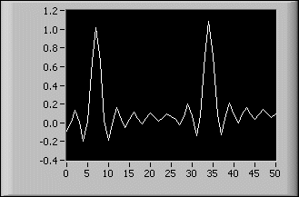

LabVIEW includes the following types of graphs and charts:
|
Note�� 3D graph controls are available only in the LabVIEW Full and Professional Development Systems. |
|
Note�� ActiveX 3D graph controls are supported only on Windows in the LabVIEW Full and Professional Development Systems. |
Refer to the labview\examples\Controls and Indicators\Graphs and Charts directory for examples of graphs and charts.
 Find related examples
Find related examples
LabVIEW includes the waveform graph and chart to display data typically acquired at a constant rate.
The waveform graph displays one or more plots of evenly sampled measurements. The waveform graph plots only single-valued functions, as in y�=�f(x), with points evenly distributed along the x-axis, such as acquired time-varying waveforms. The following front panel shows an example of a waveform graph.

The waveform graph can display plots containing any number of points. The graph also accepts several data types, which minimizes the extent to which you must manipulate data before you display it.
|
Note��Use the digital waveform graph to display digital data. |
The waveform graph accepts several data types for single-plot waveform graphs. The graph accepts a single array of values, interprets the data as points on the graph, and increments the x index by one starting at x�=�0. The graph accepts a cluster of an initial x value, a delta x, and an array of y data. The graph also accepts the waveform data type, which carries the data, start time, and delta t of a waveform.
The waveform graph also accepts the dynamic data type, which is for use with Express VIs. In addition to the data associated with a signal, the dynamic data type includes attributes that provide information about the signal, such as the name of the signal or the date and time the data was acquired. Attributes specify how the signal appears on the waveform graph. When the dynamic data type includes a single numeric value, the graph plots the single value and automatically formats the plot legend and x-scale time stamp. When the dynamic data type includes a single channel, the graph plots the whole waveform and automatically formats the plot legend and x-scale time stamp.
Refer to the Waveform Graph Data Type VI in the labview\examples\Controls and Indicators\Graphs and Charts\Waveform Graphs and Charts directory for examples of the data types that a waveform graph accepts.
 Open example�
Find related examples
Open example�
Find related examples
The waveform graph accepts several data types for displaying multiple plots. The waveform graph accepts a 2D array of values, where each row of the array is a single plot. The graph interprets the data as points on the graph and increments the x index by one, starting at x�=�0. Wire a 2D array data type to the graph, right-click the graph, and select Transpose Array from the shortcut menu to handle each column of the array as a plot. This is particularly useful when you sample multiple channels from a DAQ device because the device can return the data as 2D arrays with each channel stored as a separate column.
The waveform graph also accepts a cluster of an initial x value, a delta x value, and a 2D array of y data. The graph interprets the y data as points on the graph and increments the x index by delta x, starting at the initial x value. This data type is useful for displaying multiple signals that are sampled at the same regular rate.
The waveform graph accepts a plot array where the array contains clusters. Each cluster contains a 1D array that contains the y data. The inner array describes the points in a plot, and the outer array has one cluster for each plot. The following front panel shows this array of the y cluster.
Use a plot array instead of a 2D array if the number of elements in each plot is different. For example, when you sample data from several channels using different time amounts from each channel, use this data structure instead of a 2D array because each row of a 2D array must have the same number of elements. The number of elements in the interior arrays of an array of clusters can vary.
The waveform graph accepts a cluster of an initial x value, a delta x value, and an array that contains clusters. Each cluster contains a 1D array that contains the y data. You use the Bundle function to bundle the arrays into clusters and you use the Build Array function to build the resulting clusters into an array. You also can use the Build Cluster Array function, which creates arrays of clusters that contain the inputs you specify.
The waveform graph accepts an array of clusters of an x value, a delta x value, and an array of y data. This is the most general of the multiple-plot waveform graph data types because you can indicate a unique starting point and increment for the x-scale of each plot.
The waveform graph also accepts the dynamic data type, which is for use with Express VIs. In addition to the data associated with a signal, the dynamic data type includes attributes that provide information about the signal, such as the name of the signal or the date and time the data was acquired. Attributes specify how the signal appears on the waveform graph. When the dynamic data type includes multiple channels, the graph displays a plot for each channel and automatically formats the plot legend and x-scale time stamp.
The waveform chart is a special type of numeric indicator that displays one or more plots of data typically acquired at a constant rate. The following front panel shows an example of a waveform chart.

The waveform chart maintains a history of data, or buffer, from previous updates. Right-click the chart and select Chart History Length from the shortcut menu to configure the buffer. The default chart history length for a waveform chart is 1,024 data points. The frequency at which you send data to the chart determines how often the chart redraws.
If you pass the chart a single value or multiple values at a time, LabVIEW interprets the data as points on the chart and increments the x index by one starting at x�=�0. The chart treats these inputs as new data for a single plot.
The waveform chart accepts the waveform data type, which carries the data, start time, and delta t of a waveform. Use the Build Waveform (Analog Waveform) function to plot time on the x-axis of the chart and automatically use the correct interval between markers on the x-scale of the chart. A waveform that specifies t0 and a single-element Y array is useful for plotting data that is not evenly sampled because each data point has its own time stamp.
Refer to the labview\examples\Controls and Indicators\Graphs and Charts\Waveform Graphs and Charts\Waveform Graphs and Charts.lvproj for examples of the waveform chart.
Open example�
Find related examples
To pass data for multiple plots to a waveform chart, you can bundle the data together into a cluster of scalar numeric values, where each numeric represents a single point for each of the plots.
If you want to pass multiple points per plot in a single update, wire an array of clusters of numeric values to the chart. Each numeric represents a single y value point for each of the plots.
You can use the waveform data type to create multiple plots on a waveform chart. Use the Build Waveform function to plot time on the x-axis of the chart and automatically use the correct interval between markers on the x-scale of the chart. A 1D array of waveforms that each specify t0 and a single-element Y array is useful for plotting data that is not evenly sampled because each data point has its own time stamp.
If you cannot determine the number of plots you want to display until run time, or you want to pass multiple points for multiple plots in a single update, wire a 2D array of numeric values or waveforms to the chart. By default, the waveform chart treats each column in the array as a single plot. Wire a 2D array data type to the chart, right-click the chart, and select Transpose Array from the shortcut menu to treat each row in the array as a single plot.
Refer to the labview\examples\Controls and Indicators\Graphs and Charts\Waveform Graphs and Charts\Waveform Graphs and Charts.lvproj for examples of the waveform chart.
Open example�
Find related examples
The waveform data type carries the data, start time, and delta t of a waveform. You can create a waveform using the Build Waveform function. Many of the VIs and functions you use to acquire or analyze waveforms accept and return waveform data by default. When you wire waveform data to a waveform graph or chart, the graph or chart automatically plots a waveform based on the data, start time, and delta x of the waveform. When you wire an array of waveform data to a waveform graph or chart, the graph or chart automatically plots all waveforms.
The XY graph is a general-purpose, Cartesian graphing object that plots multivalued functions, such as circular shapes or waveforms with a varying time base. The XY graph displays any set of points, evenly sampled or not.
You also can display Nyquist planes, Nichols planes, S planes, and Z planes on the XY graph. Lines and labels on these planes are the same color as the Cartesian lines, and you cannot modify the plane label font.
The following front panel shows an example of an XY graph.
The XY graph can display plots containing any number of points. The XY graph also accepts several data types, which minimizes the extent to which you must manipulate data before you display it.
The XY graph accepts three data types for single-plot XY graphs. The XY graph accepts a cluster that contains an x array and a y array.
The XY graph also accepts an array of points, where a point is a cluster that contains an x value and a y value. The XY graph also accepts an array of complex data, in which the real part is plotted on the x-axis and the imaginary part is plotted on the y-axis.
The XY graph accepts three data types for displaying multiple plots. The XY graph accepts an array of plots, where a plot is a cluster that contains an x array and a y array.
The XY graph also accepts an array of clusters of plots, where a plot is an array of points. A point is a cluster that contains an x value and a y value. The XY graph also accepts an array of clusters of plots, where a plot is an array of complex data, in which the real part is plotted on the x-axis and the imaginary part is plotted on the y-axis.
Use the intensity graph and chart to display 3D data on a 2D plot by placing blocks of color on a Cartesian plane. For example, you can use an intensity graph or chart to display patterned data, such as temperature patterns and terrain, where the magnitude represents altitude. The intensity graph and chart accept a 3D array of numbers. Each number in the array represents a specific color. The indexes of the elements in the 2D array set the plot locations for the colors. The following illustration shows the concept of the intensity chart operation.
The rows of the data pass into the display as new columns on the graph or chart. If you want rows to appear as rows on the display, wire a 2D array data type to the graph or chart, right-click the graph or chart, and select Transpose Array from the shortcut menu.
The array indexes correspond to the lower left vertex of the block of color. The block of color has a unit area, which is the area between the two points, as defined by the array indexes. The intensity graph or chart can display up to 256 discrete colors.
Refer to the labview\examples\Controls and Indicators\Graphs and Charts\Intensity Graphs and Charts\Intensity Graphs and Charts.lvproj for examples of intensity graphs and charts.
Find related examples
After you plot a block of data on an intensity chart, the origin of the Cartesian plane shifts to the right of the last data block. When the chart processes new data, the new data values appear to the right of the old data values. When a chart display is full, the oldest data values scroll off the left side of the chart. This behavior is similar to the behavior of a strip chart.
The following front panel shows an example of an intensity chart.
The intensity chart shares many of the optional parts of the waveform chart, including the scale legend and graph palette, which you can show or hide by right-clicking the chart and selecting Visible Items from the shortcut menu. In addition, because the intensity chart includes color as a third dimension, a scale similar to a color ramp control defines the range and mappings of values to colors.
Like the waveform chart, the intensity chart maintains a history of data, or buffer, from previous updates. Right-click the chart and select Chart History Length from the shortcut menu to configure the buffer. The default size for an intensity chart is 128 data points. The intensity chart display can be memory intensive.
 |
Tip�� Unlike graphs, charts keep the history of data previously written. When a chart runs continuously, its history grows and requires additional memory space. This continues until the chart history is full, then LabVIEW stops taking more memory. LabVIEW does not automatically clear the chart history when the VI restarts. You can clear the chart history throughout the execution of the program. To do this, write empty arrays to the History Data attribute node for the chart. |
The intensity graph works the same as the intensity chart, except it does not retain previous data values and does not include update modes. Each time new data values pass to an intensity graph, the new data values replace old data values. Like other graphs, the intensity graph can have cursors. Each cursor displays the x, y, and z values for a specified point on the graph.
An intensity graph or chart uses color to display 3D data on a 2D plot. When you set the color mapping for an intensity graph or chart, you configure the color scale of the graph or chart. The color scale consists of at least two arbitrary markers, each with a numeric value and a corresponding display color. The colors displayed on an intensity graph or chart correspond to the numeric values associated with the specified colors. Color mapping is useful for visually indicating data ranges, such as when plot data exceeds a threshold value.
You can set the color mapping interactively for the intensity graph and chart the same way you define the colors for a color ramp numeric control.
You can set the color mapping for the intensity graph and chart programmatically by using the Property Node in two ways. Typically, you specify the value-to-color mappings in the Property Node. For this method, specify the Z Scale:Marker Values property for the z-scale. This property consists of an array of clusters, in which each cluster contains a numeric limit value and the corresponding color to display for that value. When you specify the color mapping in this manner, you can specify an upper out-of-range color using the Z Scale:High Color property for the z-scale and a lower out-of-range color using the Z Scale:Low Color property for the z-scale. The intensity graph and chart are limited to a total of 254 colors, with the lower and upper out-of-range colors bringing the total to 256 colors. If you specify more than 254 colors, the intensity graph or chart creates the 254-color table by interpolating among the specified colors.
If you display a bitmap on the intensity graph, you specify a color table using the Color Table property. With this method, you can specify an array of up to 256 colors. Data passed to the chart are mapped to indexes in this color table based on the color scale of the intensity chart. If the color scale ranges from 0 to 100, a value of 0 in the data is mapped to index 1, and a value of 100 is mapped to index 254, with interior values interpolated between 1 and 254. Anything below 0 is mapped to the out-of-range below color (index 0), and anything above 100 is mapped to the out-of-range above color (index 255).
|
Note��The colors you want the intensity graph or chart to display are limited to the exact colors and number of colors your video card can display. You also are limited by the number of colors allocated for your display. |
Refer to the Modifying the Color Table VI in the labview\examples\Controls and Indicators\Graphs and Charts\Intensity Graphs and Charts for an example of color mapping.
Open example�
Find related examples
Use the digital waveform graph to display digital data, especially when you work with timing diagrams or logic analyzers.
The digital waveform graph accepts the digital waveform data type, the digital data type, and an array of those data types as an input. By default, the digital waveform graph displays data as digital lines and buses in the plot area. Customize the digital waveform graph to display digital buses, digital lines, or a combination of digital buses and lines. If you wire an array of digital data where each array element represents a bus, the digital waveform graph plots each element of the array as a different line in the order that the array elements draw to the graph.
To expand and contract digital buses in the tree view of the plot legend, click the expand/contract symbol to the left of the digital bus. Expanding and contracting digital buses in the tree view of the plot legend also expands and contracts the bus in the plot area of the graph. To expand and contract digital buses when the plot legend is in standard view, right-click the digital waveform graph and select Y Scale�Expand Digital Buses from the shortcut menu.
|
Note��Y Scale�Expand Digital Buses is available only if you disable Show Buses With Lines and the plot legend is in standard view. To disable Show Buses With Lines, change the plot legend to the standard view, right-click the digital waveform graph, and select Show Buses With Lines from the shortcut menu to remove the checkmark next to the menu item. |
The digital waveform graph in the following front panel plots digital data as a bus. The VI converts the numbers in the Numbers array to digital data and displays the binary representations of the numbers in the Binary Representations digital data indicator. In the digital graph, the number 0 appears without a top line to symbolize that all the bit values are zero. The number 255 appears without a bottom line to symbolize that all the bit values are 1.
Right-click the y-scale and select Expand Digital Buses from the shortcut menu to plot each sample of digital data. Each plot represents a different bit in the digital pattern. You can customize the appearance of data plotted on a digital waveform graph.
The digital waveform graph in the following front panel displays the six numbers in the Numbers array.
The Binary Representations digital data indicator displays the binary representations of the numbers. Each column in the table represents a bit. For example, the number 89 requires 7 bits of memory (the 0 in column 7 indicates an unused bit). Point 3 on the digital waveform graph plots the 7 bits necessary to represent the number 89 and a value of 0 to represent the unused eighth bit on plot 7. Notice that the data is read from right to left.
The following VI converts an array of numbers to digital data and uses the Build Waveform function to assemble the start time, delta t, and the numbers entered in a digital data control and to display the digital data.
Refer to the labview\examples\Controls and Indicators\Graphs and Charts\Digital Waveform Graph\Digital Waveform Graph.lvproj for examples of the digital waveform graph.
Find related examples
The digital waveform data type carries start time, delta x, the data, and the attributes of a digital waveform. You can use the Build Digital Waveform function to create a digital waveform. When you wire digital waveform data to the digital waveform graph, the graph automatically plots a waveform based on the timing information and data of the digital waveform. Wire digital waveform data to a digital data indicator to view the samples and signals of a digital waveform.
The mixed signal graph can display both analog and digital data, and it accepts all data types accepted by waveform graphs, XY graphs, and digital waveform graphs.
A mixed signal graph may have multiple plot areas. A given plot area can display only digital or analog plots, not both. The plot area is where LabVIEW draws the data on the graph. The mixed signal graph automatically creates plot areas when necessary to accommodate analog and digital data. When you add multiple plot areas to a mixed signal graph, each plot area has its own y-scale. All of the plot areas share a common x-scale, allowing for the comparison of multiple signals of digital and analog data.
By default, the mixed signal graph displays digital data as digital lines and buses in the plot area. If you wire an array of digital data where each array element represents a bus, the mixed signal graph plots each column of digital data as a different line. The following front panel shows an example of a mixed signal graph.
You can configure a plot to change how a mixed signal graph displays numbers and plot lines. You also can use the Plot properties to get or set the format of numbers in the digital plots programmatically.
The mixed signal graph accepts the same data types for single-plot mixed graphs as the waveform graph, XY graph, and digital waveform graph.
Refer to the Mixed Signal Graph VI in the labview\examples\Controls and Indicators\Graphs and Charts\Mixed Signal Graph for examples of the data types that a mixed signal graph accepts.
Open example�
Find related examples
The mixed signal graph accepts the same data types for displaying multiple plots as the waveform graph, XY graph, and digital waveform graph.
Plot areas can accept only analog or only digital data. When you wire data to a mixed signal graph, LabVIEW automatically creates plot areas to accommodate combinations of analog and digital data. If there are multiple plot areas on the mixed signal graph, you can use the splitter bar between the plot areas to resize each plot area.
The plot legend on the mixed signal graph is comprised of tree controls and is displayed to the left of the graph plot areas. Each tree control represents one plot area. The plot area is labeled as Group X, where X is the number corresponding to the order in which LabVIEW, or you, place the plot area on the graph. You can use the plot legend to move plots from one plot area to another plot area. You can resize or hide the plot legend by moving the splitter bar that is between the plot area and the plot legend.
Refer to the Mixed Signal Graph VI in the labview\examples\Controls and Indicators\Graphs and Charts\Mixed Signal Graph for an example of displaying multiple plots on a mixed signal graph.
Open example�
Find related examples
A 2D graph uses x and y data to plot points on the graph and connect the points, forming a two-dimensional surface view of the data. With 2D graphs, you can visualize two-dimensional data on XY graphs because all 2D graphs are XY Graphs. Use the 2D graph properties to modify the way data appears in the 2D graphs.
When you add a 2D graph to the front panel, LabVIEW wires the graph on the block diagram to one of the helper VIs, depending on which 2D graph you select. The helper VIs convert the input data types into the generic data type the 2D graph accepts. LabVIEW includes the following types of 2D graphs:
Refer to labview\examples\Controls and Indicators\Graphs and Charts\Math Plots - 2D\Math Plots - 2D.lvproj for examples of plotting data on a 2D graph.
Find related examples
For many real-world data sets, such as temperature distribution on a surface, joint time-frequency analysis, and the motion of an airplane, you need to visualize data in three dimensions. With the 3D graphs, you can visualize three-dimensional data and alter the way that data appears by modifying the 3D graph properties.
LabVIEW includes the following types of 3D graphs:
|
Note�� 3D graph controls are only available in the LabVIEW Full and Professional Development Systems. |
|
Note�� ActiveX 3D graph controls are supported only on Windows in the LabVIEW Full and Professional Development Systems. |
Use the 3D Graphs, except for the 3D Surface, 3D Parametric, and 3D Curve graphs, in conjunction with the 3D Plot Properties dialog box to plot graphs with three dimensions. Refer to the labview\examples\Controls and Indicators\Graphs and Charts\Math Plots - 3D directory for examples of plotting data on a 3D graph.
Find related examples
Use the 3D Surface, 3D Parametric, and 3D Curve graphs in conjunction with the 3D Graph Properties dialog box to plot curves and surfaces. A curve contains individual points on the graph, each point having an x, y, and z coordinate. The VI then connects these points with a line. A curve is ideal for visualizing the path of a moving object, such as the flight path of an airplane. The following illustration shows an example of a 3D Line Graph and is similar to the ActiveX 3D Curve Graph.
|
Note��Use the 3D Graph Properties VIs to plot curves and surfaces on the ActiveX 3D graphs. |
A surface plot uses x, y, and z data to plot points on the graph. The surface plot then connects these points, forming a three-dimensional surface view of the data. For example, you can use a surface plot for terrain mapping. A parametric plot is a surface plot that uses the parameters of a parametric function to determine the curves of the plot. You can use a parametric plot for graphing geometric solid objects. The following illustration shows examples of a 3D Surface Graph and a 3D Parametric Graph.
When you add a 3D graph to the front panel, LabVIEW wires the graph on the block diagram to one of the helper VIs, depending on which 3D graph you select. The helper VIs convert the input data types into the generic data type the 3D graph accepts.
The 3D graphs use graphical hardware acceleration in the render window, which can offer performance benefits. Right-click the 3D graph and select Render Window from the shortcut menu to view the 3D graph in the render window.
The ActiveX 3D graphs use ActiveX technology and VIs that handle 3D representation. When you select an ActiveX 3D graph, LabVIEW adds an ActiveX container to the front panel that contains a 3D graph control. LabVIEW also places a reference to the ActiveX 3D graph control on the block diagram. LabVIEW wires this reference to one of the three 3D Graph VIs. (Windows) The ActiveX 3D graph uses graphical hardware acceleration in the front panel window.
Refer to the labview\examples\Controls and Indicators\Graphs and Charts\Waveform Graphs and Charts directory for examples of plotting data on a 3D graph.
Find related examples